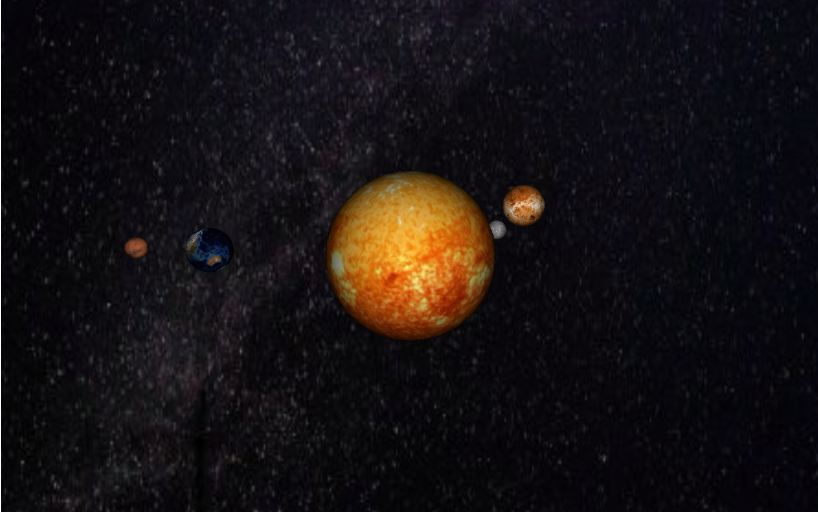

p5.js Applets
Game of Tanks
For one of my assignments in Nature of Code, I decided to make a 2-player game that has 2 fighting tanks. First step was to create the tank object with the functions shoot(), move(), update() and show(). To be honest, the most difficult part of the whole project was writing the update() function. The update() function served to make the tank gun point at the mouse. However, the atan() function often yielded negative numbers that would flip the rotate() function. As a result, at some angles the gun would face the mouse and at some others, it would point away. After a lot of modification and testing, I finally solved the problem somehow and it worked for angles between 0 and 90 degrees.
On a final note, there are some improvements I would like to eventually add. For example, I will replace all the p5.js 2D primitive shapes with actual images of tanks. In addition, I would like to replace the "ground" rectangles with maybe a dirt texture. I also want to implement sounds such as a background music track and explosion sounds. This will probably make the game look more like an actual final product.
Solar System Simulator
Launch
The part of writing this sketch that I struggled with the most is working in 3D. Since the p5js 3D functionality is fairly new, it is not really as well developed as 2D graphics. There was little documentation on the subject and it was a bit counterintuitive. This, combined with the fact that this is my first time working with 3D, made the whole project very challenging. Even the simplest processes like drawing a line took me a lot of time to figure out since I always have to use the translate and rotate functions. Furthermore, the math involved in orbital mechanics is not at all simple. To create an elliptical orbit, I had to do great deal of reading on the subject to understand how to simulate it.
There are many improvements I would like to add to this project. First of all, I want it to be able to pull up and use data from an astronomy JSON API corresponding to specific dates. This would greatly improve the accuracy of the simulation and allow for the calculation of the actual planet positions at any date. Furthermore, I am planning to change the integration algorithm that calculates the bodies' position to the Velocity Verlet algorithm. The Velocity Verlet algorithm is much more accurate and stable than the Euler algorithm in applications that involve gravity. This would allow bodies with the right velocity to have a stable orbit around the sun, instead of being flung away.